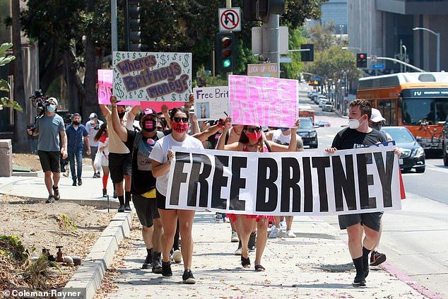
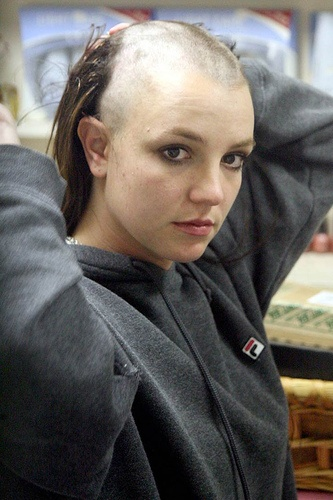
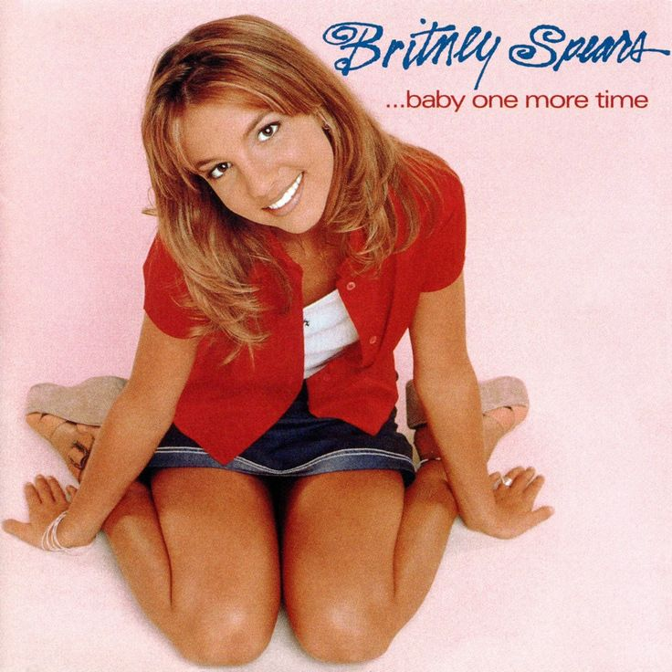

Últimas Notícias
Britney Spears é detida na Califórnia
A cantora foi levada pela polícia após suspeita de dirigir sob efeito de álcool e foi liberada pouco tempo depois.
A cantora Britney Spears foi detida após um incidente em um hotel, chamando a atenção de fãs e da mídia. Segundo informações divulgadas, a situação envolveu um desentendimento e acabou resultando na intervenção das autoridades.
O caso rapidamente repercutiu nas redes sociais e em portais de notícias, gerando diversas reações do público enquanto mais detalhes sobre o ocorrido continuam surgindo.

Movimento #FreeBritney ganha força nas redes
Fãs do mundo inteiro pediram o fim da tutela que controlava a vida pessoal e financeira da artista.
O movimento #FreeBritney ganhou força nas redes sociais quando fãs começaram a questionar a tutela legal que controlava a vida e a carreira de Britney Spears.
Com protestos e grande mobilização online, o caso chamou atenção da mídia mundial e levantou debates sobre liberdade e direitos da cantora.
Britney Spears raspa a cabeça em 2007

A cantora raspou o próprio cabelo em um salão de Los Angeles, em um momento difícil que virou uma das cenas mais comentadas da cultura pop.
Em 2007, Britney Spears chamou a atenção do mundo ao raspar o próprio cabelo em um salão em Los Angeles.
O momento rapidamente virou manchete internacional e passou a simbolizar um período difícil na vida pessoal da cantora.
O sucesso do álbum ...Baby One More Time

Lançado em 1999, o primeiro álbum de Britney Spears transformou a cantora em um fenômeno mundial do pop.
Lançado em 2000, Oops!... I Did It Again se tornou um dos maiores sucessos da carreira de Britney Spears.
A música e o icônico clipe consolidaram a cantora como uma das maiores estrelas do pop e marcaram a cultura pop dos anos 2000.